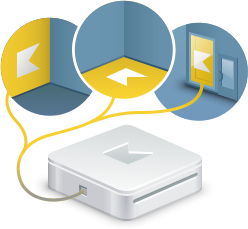

Kolight - an interactive, high-tech system from Kodisoft, combining modern equipment and creative ideas for the implementation of interactive, "live" advertising. Projection system of the new generation. It is a perfect combination of bold and creative ideas and ultramodern projection equipment. This is a unique kind of advertising medium, capable of reacting to human movement and interact with it.

Kolight
Interactive projection.
Interactive floor
Interactive wall
Interactive showcase
Bluetooth marketing
Augmented reality
3D advertisement
Network
Comunication portals
Technology
Kolight - an interactive, high-tech system from Kodisoft, combining modern equipment and creative ideas for the implementation of interactive, "live" advertising. Projection system of the new generation. It is a perfect combination of bold and creative ideas and ultramodern projection equipment. This is a unique kind of advertising medium, capable of reacting to human movement and interact with it.
Kolight can display graphics and video in any format and any visual effects. We do not limit ourselves to a standard set of images and effects - we provide unlimited opportunities for choosing data to create interactive projections. This means that successful interactive projector displays any images and videos directly to your designers developed, and does not impose any conditions on the format, size, effects, or any other fruit of your imagination.
Through the use of unique technology KodiPuzzle, interactive system creates Kolight especially bright and vivid images, so that the advertising effect applies not only to the people involved in an interactive game, but many watching, who happened to be nearby. For example, only 2% of people in the zone of the projection interactive attract attention has 40% passing.
The entire complex has a small size and several times smaller and lighter than any analogs, which allows to use it everywhere.
Capabilities
-
SizeKolight.Basic the smallest and lightest device in the world! Now there is no need to think how and where to place the interactive system - we did it as small and light as possible. The whole system is placed in his hands, and its weight is just over 1 kilogram
-
 More than 50 available effects and 10 gamesAcquiring Kolight, you get a library of more than 50 effects and animation, as well as 10 games. And all this, you can use as a ready-made solutions for your events, as well as templates to create new effects, animation and games
More than 50 available effects and 10 gamesAcquiring Kolight, you get a library of more than 50 effects and animation, as well as 10 games. And all this, you can use as a ready-made solutions for your events, as well as templates to create new effects, animation and games -
SavingsTo one Kolight can connect two projectors to create a floor corridors, large interactive wall projection without shadows on the floor and walls. Not only do you save money on equipment, but still get the seamless projection of excellent quality and high performance. This option can also be used in planning large-scale events, where interactive equipment can be less than half of the projection
-
Quality and realistic effectsOutput image is not limited to the use of their work for Adobe Flash (technology for internet banners, although this format is also supported), but uses the whole "power" video card, through modern technologies such as Quartz, OpenGL and DirectX, allowing you to create the most dynamic lifelike images, pictures and even 3-D characters, providing a truly unforgettable experience for the consumer
-
On-line managementKolight designed so that you can in a mode on-line to see the results of his work, from anywhere in the globe where there is a connection to the Internet. Giving presentations to potential clients , you can instantly connect to the broadcast and see what happens on the interactive site at any given time . Such will be the live broadcast of "highlight" of your presentation , and the results are seen necessarily produce a positive effect on your customers. With a special web-based interface , you can configure the interactive system , upload videos , animations , etc. It is possible to configure the schedule to interactive projection display automatically clearly agreed schedule . Moreover, it does not require any special skills or in-depth knowledge , the implementation is simple and user friendly. And all this in the most convenient on-line management system marketing tools - Kodisoft Marketing Portal
-
FlexibilityDo not limit yourself to standard set of effects . In Kolight.Basic specifically included software that makes it easy to create your own animations, games and new effects in a few clicks , and without knowledge of special programs . Innovative technology KodiPuzzle, used in our software allows you to create any animation , video, interactive presentations for projection. We are not limited to a narrow set of standard effects . Our technologies allow to realize the most daring of your creative ideas of designers , which they absolutely do not want to specifically study the interactive projections
-
Bluetooth MarketingAll devices are equipped with transmitters Kolight Bluetooth, and can also work with devices IDBM. This combination of 2-promotional tool - enhances the success of any event. Passers-by and participants of your events are not only able to "play" with interactive, but also leave pleasant memories in the form of pictures, music, electronic brochures and even video clips in their mobile phones
-
VersatilityOne device that combines the "Interactive floor", "Interactive Wall", "Interactive showcases." By purchasing our system, you can use it at different events, which significantly saves your advertising costs, and at the same time provides new opportunities every time
-
Dual (augmented) realityDevices capable Kolight combine virtual and real life. Kolight people can recognize their faces, special markers, company logos, etc. to substitute the images on the screen or projection. This technology is completely blurs the line between reality and virtual life. Kolight - this is a new dimension of a successful business.
-
ControlPossible to control and full control over the interactive projection using the remote control . If you want to have full control and monitoring system in one room, you can do it using a computer or laptop. Network management devices, as well as for remote control from anywhere in the world , you can use the Internet. Just to achieve the maximum benefit from the equipment we did Events - Are you able make a calendar for a variety of events: conferences , seminars, exhibitions , presentations, and so comfortable and with maximum efficiency to allocate time to use our online system.
-
 AccuracyPerfect recognition of movements and gestures, instant and accurate determination of the presence and shape of objects, as well as the reliability of responses to touch. All this is achieved through the use of non-standard, and we have developed motion sensors. Our laboratory has developed a unique set of sensors, which combine the ease and simplicity of use of optical sensors, as well as the accuracy and endurance ultrasonic transducers.
AccuracyPerfect recognition of movements and gestures, instant and accurate determination of the presence and shape of objects, as well as the reliability of responses to touch. All this is achieved through the use of non-standard, and we have developed motion sensors. Our laboratory has developed a unique set of sensors, which combine the ease and simplicity of use of optical sensors, as well as the accuracy and endurance ultrasonic transducers. -
NetworkingKolight provides the ability to create a huge projection on the floor, wall, buildings. This is a great opportunity to highlight the magnitude and enormity of your activities and events. Hundreds of square meters of interactive "web" that will not leave anyone indifferent. Possible combinations of interactive floor, rolling in the wall, and a fully interactive rooms!
-
PriceWe are manufacturers and creators systems Kolight. This means that you get: the lowest prices for our products; instant service and advice from the developers; the rapid creation of new, non-standard, solutions for your company; opportunity to be always ahead of everyone - we are constantly improving our products, and you get the latest updates.
-
Emotional advertisingKolight can recognize and "capture" the mood of the people and adjust advertising under it
Kolight Basic
- interactive floor
- interactive wall
- Interactive showcase
- Bluetooth Marketing
Kolight Pro
- interactive floor
- interactive wall
- Interactive showcase
- Bluetooth Marketing
- Augmented Reality
- 3D advertising
- Networking
- portals communication
Kolight Pro
- interactive floor
- interactive wall
- Interactive showcase
- Bluetooth Marketing
- Augmented Reality
- 3D advertising
- Networking
- portals communication